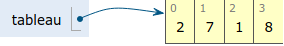

Crédits⚓︎
Ce cours est largement inspiré des chapitres 5 et 8 du manuel NSI de la collection Tortue chez Ellipse, auteurs : Ballabonski, Conchon, Filliatre, N'Guyen. Le prepabac Première NSI de Guillaume Connan chez Hatier a également été consulté.
Situation d'accroche⚓︎
:::exercice
1. Écrire une fonction `moyenne3notes(a, b, c)` qui renvoie la moyenne arithmétique d'une série de 3 notes `a, b, c`.
2. Proposer une fonction `moyenne(n)` qui prend en paramètres un nombre de notes et retourne la moyenne de ces notes saisies par l'utilisateur.
3. Quel(s) mécanisme(s) pourrai(en)t nous permettre d'écrire une fonction qui calcule la moyenne d'une série de notes sans interaction avec l'utilisateur du programme ?
:::
Définition d'un tableau⚓︎
:::definition
* Un objet est un __conteneur__ s'il peut conteneur plusieurs objets.
* Un __conteneur__ est une __séquence__ s'il contient une __collection ordonnée__ d'objets qui sont accessibles par leur __index__ dans la séquence.
* Un __tableau__ est une structure de données qui est un __conteneur__ et une __séquence__. Il permet de stocker plusieurs éléments dans une seule variable et d'y accéder par leur __index__.
:::

\Tableaux en Python⚓︎
:::cours
* En [Python][Python], les tableaux sont implémentés dans le type `list` et on les nomme souvent listes même si les listes désignent en général une autre structure de données. Le type `list` est suffisamment flexible pour représenter la structure de données tableau et d'autres comme les listes, piles, files ...
_Dans la suite de ce cours, on désigne par tableaux, les objets de type `list` du langage [Python][Python]. Dans les exercices, comme dans les QCM d'E3C, on rencontrera parfois l'appellation Python liste pour désigner la structure de données tableau_
* Un tableau [Python][Python] est une expression délimitée par des crochets et les éléments dans l'ordre croissant des index de gauche à droite sont séparés par le symbole virgule `,` :
```python
>>> t = [4, 20, 10] # on affecte le tableau [4, 20, 10] à t
>>> len(t)
3
>>> t[0]
4
>>> t[len(t)-1]
10
>>> t[3]
Traceback (most recent call last):
File "<stdin>", line 1, in <module>
IndexError: list index out of range
>>> t[0] = 6
>>> t
[6, 20, 10]
```
* La séquence de valeurs contenue dans un tableau est indexée à partir de 0.
* Le __nombre d'éléments__ d'un tableau affecté à une variable `t` est donné par la fonction `len` avec `len(t)`.
Un __tableau vide__ est noté `[]`.
* On accède à l'élément d'index `k` avec la syntaxe `t[k]`.
* On peut manipuler l'élément d'index `k` comme une variable et modifier sa valeur par une affectation avec la syntaxe `t[k] = valeur`.
* On peut considérer que l'accès et la modification d'un élément à partir de son index se fait en __temps constant__, car les éléments sont stockés de façon contigue en mémoire et l'index donne le nombre de décalages depuis le premier élément.
* Un tableau est __itérable__, c'est-à-dire qu'on peut parcourir ses éléments avec une boucle `for`:
~~~python
>>> for e in t:
... print(e)
...
4
20
10
~~~
* En [Python][Python], les tableaux peuvent contenir des éléments de types hétérogènes mais nous manipulerons principalement des tableaux homogènes (types `int, float, string`, `bool`).
* En [Python][Python], les tableaux sont __dynamiques__, leur taille peut varier.
:::
Accès aux éléments d'un tableau⚓︎
:::methode
* Dans un tableau tab, chaque élément de la séquence ordonnée est repéré par son index k qui permet d'accéder à l'élément avec l'expression tab[k] ou de le modifier avec l'instruction tab[k] = valeur.
* Python permet également d'extraire un sous-tableau d'un tableau tab avec l'expression tab[debut:fin] qui représente la sous-séquence de fin - debut éléments, entre l'élément d'index debut inclus et l'élément d'index fin exclu, comme pour range(debut, fin). Ce mécanisme de découpage en tranches est désigné par le terme de slicing.
* Python permet de repérer les éléments avec des index négatifs représentant le décalage par rapport à la la fin de la séquence, mais nous ne les utiliserons pas car ils sont source d'erreurs.
\
_Figure modifiée à partir d'une source de Louis Leskow inspirée d'un memento de Laurent Pointal_
* On peut tester l'appartenance d'un élément à un tableau avec l'opérateur `in` et sa négation `not in`. Cette opération s'effectue en moyenne en coût proportionnel à la taille du tableau.
~~~python
>>> t = list(range(6))
>>> t
[0, 1, 2, 3, 4, 5]
>>> 4 in t
True
>>> 6 in t
False
>>> 6 not in t
True
~~~
:::
:::exercice
1. Soit la liste suivante : `liste_pays = ["France","Allemagne","Italie","Belgique"]`.
Que renvoie : `liste_pays[2]` ?
2. Quelle est la valeur référencée par le tableau L après exécution du programme ci-dessous ?
~~~python
L = [731, 732, 734]
L[0], L[1] = L[1], L[0]
M = L
M[1] = 732
~~~
__Réponse 1 :__ [732, 731, 734] __Réponse 2 :__ [731, 732, 734] __Réponse 3 :__ [732, 732, 734]
3. On définit : `L = [10,9,8,7,6,5,4,3,2,1]`.
Quelle est la valeur de `L[L[3]]` ?
* __Réponse 1 :__ 3 __Réponse 2 :__ 4
* __Réponse 3 :__ 7 __Réponse 4 :__ 8
4. Écrire une fonction `recherche(tab, element)` qui prend en paramètre un tableau et un élément et qui retourne `True` si `element` est dans `tab` et `False` sinon.
:::
Construction d'un tableau⚓︎
:::methode
Il existe plusieurs façons de définir un tableau en [Python][Python].
* On peut le définir en __extension__ en énumérant toute la séquence :
~~~python
>>> t1 = [8, 10, 11,14]
>>> t2 = [False, True, False]
~~~
{width=50%}\
* On peut convertir en tableau un autre objet itérable (qui peut se parcourir avec une boucle `for`) avec le constructeur `list`.
~~~python
>>> t11 = list(range(5))
>>> t11
[0, 1, 2, 3, 4]
>>> t12 = list('alphabet')
>>> t12
['a', 'l', 'p', 'h', 'a', 'b', 'e', 't']
>>> list(4)
Traceback (most recent call last):
File "<stdin>", line 1, in <module>
TypeError: 'int' object is not iterable
~~~
* On peut le définir en __compréhension__ en générant ses éléments par une boucle `for` sur un itérable ( générateur d'entiers `range`, autre tableau ...) combinée éventuellement avec un filtrage par une instruction conditionnelle :
~~~python
>>> t3 = [k ** 2 for k in range(6)] #carrés des entiers entre 0 et 5
>>> t3
[0, 1, 4, 9, 16, 25]
>>> t4 = [k for k in range(len(t2)) if t2[k]] # index des éléments de t2 de valeur True
>>> t4
[1]
~~~
:::
:::exercice 1. Auteur : Germain Becker, question n°326 Genumsi.
Quel est le tableau `t` construit par les instructions suivantes ?
~~~python
tab = [1, 2, -3, 7, 4, 10, -1, 0]
t = [e for e in tab if e >= 0]
~~~
* __Réponse 1 :__ `t = [1, 2, 7, 4, 10, 0]`
* __Réponse 2 :__ `t = [e, e, e, e, e, e]`
* __Réponse 3 :__ `t = [1, 2, 7, 4, 10]`
* __Réponse 4 :__ `t = [-3, -1, 0]`
2. Quel est le résultat de l'évaluation de l'expression Python suivante ? _Auteur : Eric Rougier_
`[2 ** n for n in range(4)]`
Réponses :
* __Réponse 1 :__ `[0, 2, 4, 6, 8]`
* __Réponse 2 :__ `[1, 2, 4, 8]`
* __Réponse 3 :__ `[0, 1, 4, 9]`
* __Réponse 4 :__ `[1, 2, 4, 8, 16]`
3. Qu'affiche le programme [Python][Python] ci-dessous ?
~~~python
L=[0,1,2]
M=[3,4,5]
N=[L[i]+M[i] for i in range(len(L))]
print(N)
~~~
4. On exécute le script suivant :
~~~python
L = [12,0,8,7,3,1,5,3,8]
a = [elt for elt in L if elt < 4]
~~~
Quelle est la valeur de `a` à la fin de son exécution ?
* __Réponse 1 :__ `[12,0,8]` __Réponse 2 :__ `[12,0,8,7]`
* __Réponse 3 :__ `[0,3,1,3]` __Réponse 4 :__ `[0,3,1]`
:::
Opérations sur les tableaux⚓︎
:::methode
* On peut concaténer deux tableaux avec l'opérateur `+`, un nouveau tableau est renvoyé.
~~~python
>>> t1 = [1,2]
>>> t2 = [3,4]
>>> t3 = t1 + t2
>>> t3
[1, 2, 3, 4]
~~~
* L'opérateur `*` permet d'itérer une concaténation et d'initialiser un tableau de taille quelconque avec une valeur par défaut. Attention, c'est le même élément qui est dupliqué !
~~~python
>>> t0 = [0] * 4 #un tableau de taille 4 initialisé à 0
>>> t0
[0, 0, 0, 0]
>>> tv = [True] * 6 #un tableau de taille 6 initialisé à True
>>> tv
[True, True, True, True, True, True]
>>> from random import randint
>>> t1 = [randint(1, 6) for _ in range(5)] #5 lancers de dé à 6 faces
>>> t1
[5, 2, 2, 5, 6]
>>> t2 = [randint(1, 6)] * 5 #5 lancers de dé à 6 faces ?
>>> t2 #non 5 fois le même lancer
[5, 5, 5, 5, 5]
~~~
:::
:::exercice
1. On exécute le script suivant :
~~~python
a = [1, 2, 3]
b = [4, 5, 6]
c = a + b
~~~
Que contient la variable `c` à la fin de cette exécution ?
Réponses :
* __Réponse 1 :__ `[5,7,9]` __Réponse 2 :__ `[1,4,2,5,3,6]`
* __Réponse 3 :__ `[1,2,3,4,5,6]` __Réponse 4 :__ `[1,2,3,5,7,9]`
2. Soit la fonction `mystere` ci-dessous.
Quelle est la valeur retournée par `mystere([831, 832, 833, 841, 842, 843])` ?
~~~python
def mystere(u):
v = []
n = len(u)
for k in range(n):
v = [u[k]]+v
return v
~~~
:::
Parcours d'un tableau⚓︎
:::methode
Il existe deux façons de parcourir un tableau en [Python][Python] :
1. __Le parcours par élément__, puisqu'un tableau de type `list` est __itérable__ en [Python][Python] :
~~~python
>>> t6 = [3, 1, 4]
>>> for e in t6:
... print("valeur : ", e)
...
valeur : 3
valeur : 1
valeur : 4
~~~
2. __Le parcours par index__, permet de récupérer les indexs des éléments en plus de leurs valeurs :
~~~python
>>> for k in range(len(t6)):
... print("valeur : ", t6[k], " index :", k)
...
valeur : 3 index : 0
valeur : 1 index : 1
valeur : 4 index : 2
~~~
:::
:::exercice
1. Écrire une fonction occurences(v, t) qui retourne le nombre d'occurences de la valeur v dans le tableau t.
2. Auteur : Nicolas Réveret, question n°379 Genumsi
On a saisi le code suivant :
~~~python
liste = [0, 1, 2, 3]
compteur = 0
for i in range(len(liste)-1) :
for j in range(i,len(liste)) :
compteur += 1
~~~
Que contient la variable compteur à la fin de l’exécution de ce script ?
3. Revenons sur notre situation d'accroche.
* Écrire une fonction `somme(tab)` qui retourne la somme des éléments d'un tableau de nombres `tab`.
* Écrire une fonction `moyenne_arithmetique(tab)` qui retourne la moyenne arithmétique des éléments d'un tableau de nombres `tab`.
4. En voulant programmer une fonction qui calcule la valeur minimale d'un tableau d'entiers, on a écrit :
~~~python
def minimum(L):
mini = 0
for e in L:
if e < mini:
mini = e
return mini
~~~
Cette fonction a été mal programmée. Pour quel tableau ne donnera-t-elle
pas le résultat attendu, c'est-à-dire son minimum ?
Réponses :
* __Réponse 1 :__ `[-1,-8,12,2,23]`
* __Réponse 2:__ `[0,18,12,2,3]`
* __Réponse 3:__ `[-1,-1,12,12,23]`
* __Réponse 4:__ `[1,8,12,2,23]`
5. Écrire une fonction `max_tab(tab)` qui retourne le maximum d'un tableau de nombres passé
en paramètre.
:::
Aliasing⚓︎
Aliasing et copie de tableau⚓︎
:::cours
* Pour les tableaux (type list), comme pour les autres types construits, le mécanisme de l'affectation de variable en Python diffère de celui des types base : int, float, bool). Lors de l'affectation tab = [6, 3, 1], la variable tab ne reçoit pas comme valeur les éléments du tableau mais une référence vers la zone mémoire où ils sont effectivement stockés. Ce mécanisme est désigné par le terme d'aliasing.
* Illustrons ces différences en déroulant une séquence d'affectations avec Python-tutor, où l'on copie par affectation une variable de type int puis une variable de type list.
* __Étape 1 :__ Si `a` est de type de base (ici `int`), l'affectation `b = a` assigne à la variable `b` une copie de la valeur de la variable `a` (ici 50.)
\
* __Étape 2 :__ Si on modifie la valeur de `b`, la variable `a` n'est pas touchée, les deux variables sont indépendantes.
\
* __Étape 3 :__ Si on affecte le tableau `[14, 18]` à la variable `t1`, celle-ci ne prend pas pour valeur directement la séquence d'éléments du tableau mais une __référence__ vers cette séquence.
\
* __Étape 4 :__ Si `t1` est de type construit (ici `list`), l'affectation `t2 = t1` assigne à la variable `t2` une copie de la valeur de la variable `t1` comme pour les types de base, sauf que la valeur de `t1` est une __référence__. On dit que `t1` et `t2` partagent la même référence.
\
* __Étape 5 :__ Comme `t1` et `t2` partagent la même référence, toute modification de `t1` touche `t2` et vice-versa. On parle __d'effet de bord__. Attention, il faut bien comprendre ce mécanisme pour éviter les effets de bord indésirables !
\
\
* On peut réaliser une __copie superficielle__ (ou _shallow copy_) d'un tableau ou d'une variable de type construit avec le mécanisme de _slicing_. Noys y reviendrons plus tard, pour les structures imbriquées (tableaux de tableaux), il faudra copier récursivement les valeurs correspondant à toutes les références avec une __copie profonde__. Le module `copy` propose une fonction `copy` pour la copy superficielle et une fonction `deepcopy` pour la copie profonde.
\
:::
:::exercice
1. Écrire une fonction `copie(tab)` qui retourne une copie superficielle du tableau `tab` sans utiliser de _slicing_.
2. _Auteur : Nicolas Revéret_
On considère le code suivant :
~~~python
def f(tab):
for i in range(len(tab)//2):
tab[i],tab[-i-1] = tab[-i-1],tab[i]
~~~
Après les lignes suivantes :
~~~python
tab = [2,3,4,5,7,8]
f(tab)
~~~
Quelle est la valeur de la variable `tab` ?
Réponses :
* __Réponse 1__ `[2,3,4,5,7,8]` __Réponse 2__ `[5,7,8,2,3,4]`
* __Réponse 3__ `[8,7,5,4,3,2]` __Réponse 4__ `[4,3,2,8,7,5]`
:::
Aliasing et passage de tableau en paramètre d'une fonction⚓︎
:::methode
En [Python][Python], lorsqu'on appelle une fonction avec des __paramètres effectifs__, les __paramètres formels__ apparaissant dans la signature de la fonction, deviennent des variables locales à la fonction et reçoivent comme valeurs des copies des valeurs des paramètres effectifs. Les types construits, comme les tableaux de type `list`, ayant pour valeur une référence, le paramètre formel va partager la même référence et on va retrouver les mêmes effets de bord que dans la copie de tableau par affectation.
* __Étape 1 :__ On définit une variable globale `a` de type `int`, une variable `t1` de type `list` (un tableau), une fonction `incremente(x)` qui incrémente la valeur du paramètre `x` de type `int` et une fonction `incremente_tab(tab)` qui incrémente tous les éléments du paramètre `tab`de type `list`.
\
* __Étape 2 :__ On appelle `incremente(a)` et on affecte la valeur retournée à une variable `b`. Lors de l'appel, le paramètre formel `x` prend pour valeur une copie de la valeur du paramètre effectif `a`. La fonction retourne la valeur 6 après incrémentation de la variable `x`, les variables globale `a` et locale `x` sont indépendantes. `x` disparaît dès que l'appel de fonction se termine.
\
\
* __Étape 3 :__ La variable globale `b` a été affectée avec 6 la valeur retournée par `incremente(a)`. La variable `a` n'a pas été modifiée par effet de bord,. Lors de l'appel `incremente_tab(t1)`, le paramètre formel `tab` est affecté avec une copie de la valeur du paramètre effectif `t1`. Ce dernier n'est pas de type de base comme `a`, mais de type construit `list` donc sa valeur est un référence.
\
* __Étape 4 :__ La variable locale `tab` et la variable globale `t1` partagent une même référence : la fonction `incremente_tab` peut modifier le tableau référencé . La fonction `incremente_tab` renvoie `None` même si elle ne contient pas d'instruction `return`. Après l'appel de fonction, la variable globale `t1` a été modifiée par par __effet de bord__. Une fonction qui modifie l'état de la mémoire du programme principale, sans renvoyer de valeur, s'appelle une __procédure__.
\
\
\
:::
:::exercice
1. On veut écrire une procédure `echange(tab, i, j)` qui échange les éléments d'index `i` et `j` d'un tableau `tab`. On fournit le modèle ci-dessous :
~~~python
def echange(tab, i, j):
assert 0 <= i < len(tab) and 0 <= j < len(tab), "message d'erreur"
# à compléter
~~~
* Remplacer le message d'erreur de l'assertion par un message pertinent.
* Compléter la fonction.
2. Écrire une procédure `permutation_circulaire(tab)` qui modifie la position des éléments du tableau `tab` par permutation circulaire de gauche à droite :
~~~python
>>> t = list(range(6))
>>> t
[0, 1, 2, 3, 4, 5]
>>> permutation_circulaire(t)
>>> t
[5, 0, 1, 2, 3, 4]
>>> permutation_circulaire(t)
>>> t
[4, 5, 0, 1, 2, 3]
~~~
:::
Méthodes de tableau dynamique en Python⚓︎
:::methode
Les tableaux Python sont dynamiques c'est-à-dire que leur taille peut évoluer. Pour un tableau tab, les fonctions permettant d'ajouter ou enlever des éléments sont des méthodes de l'objet tab qui s'utilisent avec la notation pointée tab.methode(parametres). Un tableau étant de type list il est équivalent d'écrire list.methode(tab, parametres).
~~~python
>>> t = [] #tableau vide
>>> t.append(8) #ajout de l'élément 8 à la fin de t
>>> t
[8]
>>> list.append(t, 7) #ajout de l'élément 7 à la fin de t
>>> t
[8, 7]
~~~
* On peut ajouter un élément à la fin d'un tableau avec la méthode `append`. On peut ainsi peupler un tableau initialement vide.
~~~python
>>> t5 = []
>>> for k in range(3):
... t5 .append(k ** 2)
...
>>> t5
[0, 1, 4]
~~~
* On peut insérer un élément avec la méthode `insert` qui prend en paramètre l'index de l'élément une fois inséré. Les éléments à sa droite étant tous décalés vers la droite, l'insertion peut représenter un coût proportionnel à la taille du tableau si elle se fait au début du tableau.
~~~python
>>> t = ['a', 'c', 'd']
>>> t.insert(1, 'b')
>>> t
['a', 'b', 'c', 'd']
~~~
* On peut extraire un élément de deux façons :
* À partir de son index, avec la méthode `pop`, qui prend pour paramètre l'index de l'élément extrait, le dernier par défaut. Tous les éléments à droite de l'élément extrait doivent être décalés vers la gauche, ce qui peut représenter un coût proportionnel à la taille du tableau si l'extraction se fait au début du tableau.
~~~python
>>> carac = [chr(k) for k in range(ord('a'), ord('g'))]
>>> carac
['a', 'b', 'c', 'd', 'e', 'f']
>>> carac.pop()
'f'
>>> carac
['a', 'b', 'c', 'd', 'e']
>>> carac.pop(0)
'a'
>>> carac
['b', 'c', 'd', 'e']
~~~
* À partir de sa valeur avec la méthode `remove`, la première occurence trouvée de l'élément passée en paramètre est supprimée. Encore une fois, le coût peut être proportionnel à la taille du tableau si la suppression se fait au début.
~~~python
>>> t = [0,1,0,1]
>>> t = [0,2,0,2]
>>> t.remove(2)
>>> t
[0, 0, 2]
>>> t.remove(1)
Traceback (most recent call last):
File "<stdin>", line 1, in <module>
ValueError: list.remove(x): x not in list
~~~
* On peut compter le nombre d'occurences d'un élément dans un tableau avec la méthode `count`.
~~~python
>>> t = [randint(1, 6) for _ in range(1_000_000)] #10**6 lancers de dés
>>> t.count(6) #nombre de 6, cohérent non ?
166821
~~~
:::
:::exercice
1. Écrire une fonction fonction filtre_notes(tab) qui extrait toutes les notes inférieures à 10 d'un tableau de notes entre 0 et 20 et les renvoie dans un autre tableau.
2. Écrire une fonction renvoyant le maximum d'un tableau passé en paramètre et le tableau des positions où ce maximum est atteint.
3. On définit en Python la fonction suivante :
~~~python
def f(L):
S = []
for i in range(len(L)-1):
S.append(L[i] + L[i+1])
return S
~~~
Quel est le tableau renvoyé par `f([1, 2, 3, 4, 5, 6])` ?
* __Réponse 1__ `[3, 5, 7, 9, 11, 13]`
* __Réponse 2__ `[1, 3, 5, 7, 9, 11]`
* __Réponse 3__ `[3, 5, 7, 9, 11]`
* __Réponse 4__ cet appel de fonction déclenche un message d'erreur
:::